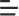

<ion-header class="ion-no-border">
  <ion-toolbar>
    <ion-buttons slot="start">
      <ion-button>
        
      </ion-button>
    </ion-buttons>

    <ion-buttons slot="primary">
      <ion-button>
        
      </ion-button>

      <ion-button>
        
      </ion-button>

      <ion-button class="userProfile_Icon">
        
      </ion-button>
    </ion-buttons>
  </ion-toolbar>
</ion-header>


<ion-content>
  <!-- fab placed to the top end -->
  <ion-fab vertical="bottom" horizontal="center" slot="fixed">
    <ion-fab-button routerLink="/mood">
      
    </ion-fab-button>
  </ion-fab>

  <ion-tabs>
    <ion-tab-bar slot="bottom">
      <ion-tab-button tab="home">
        <ion-icon src="../../assets/home.svg"></ion-icon>
        <ion-label>Home</ion-label>
      </ion-tab-button>

      <ion-tab-button tab="nearby">
        <ion-icon src="../../assets/location.svg"></ion-icon>
        <ion-label>Nearby</ion-label>
      </ion-tab-button>

      <ion-tab-button tab="circle">
        <ion-icon src="../../assets/circle.svg"></ion-icon>
        <ion-label>Circle</ion-label>
      </ion-tab-button>

      <ion-tab-button routerLink="/mood">
        
      </ion-tab-button>
    </ion-tab-bar>
  </ion-tabs>
</ion-content>